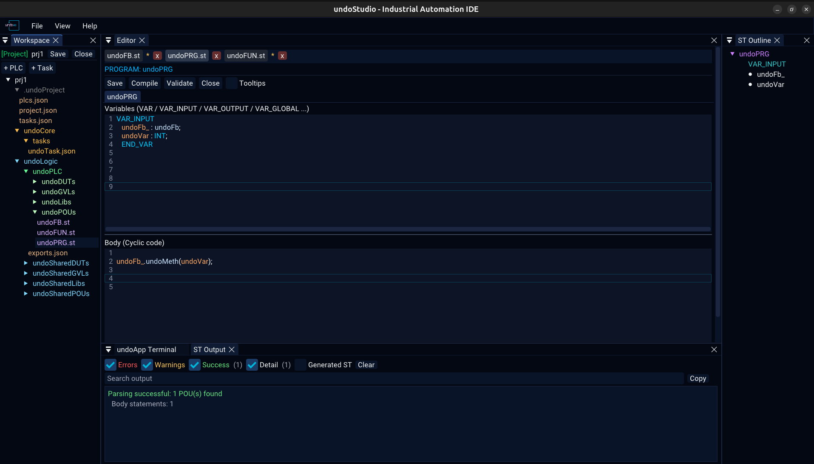

|
undoStudio
The IDE of the undoRT ecosystem
|
|
undoStudio
The IDE of the undoRT ecosystem
|
The Workspace panel is the file tree, and the toolbar that opens and creates projects.


The panel offers New Project and Open Project, and the tree below them shows the files of the folder that was picked as a workspace.
The header turns green and names the project, with Save and Close beside it.
| Click | open the file, and keep its tab |
| Right-click | the context menu, below |
| Drag onto a folder | move the file there |
A file that is being previewed — opened once and left — is kept until another file takes the slot, so browsing a folder does not empty the editor.
| Item | On | |
|---|---|---|
| Open | file | open it |
| Open as Text | .json | the editable view, json.md |
| Open as Tree | .json | the browsable view, json.md |
| Add Method | .st | ask for a name and add it, structured-text.md |
| Rename | file | rename, following the tab with it |
| Delete | file | delete, with a confirmation |
Inside a project the menu knows which folder it is on, because each one means something different:
| Folder | Items |
|---|---|
| POUs | New PROGRAM, New FUNCTION_BLOCK, New FUNCTION |
| GVLs | New GVL |
| DUTs | New STRUCT, New ENUM |
| Libs | Add Library File |
| undoLogic | Add PLC… |
| a PLC | Add Task…, Rename PLC…, Delete PLC |
| Tasks | Add Task… |
| anything else | New POU, New File, New Folder, Rename, Delete Folder |
Node names in the tree are coloured by what they are: POUs and their kinds in greens, .st files in violet, configuration and JSON in amber, configuration folders in grey.
Delete is not on the keyboard: removing a file is not something a stray keypress should do.
Four things file a document under its path — the tab, the key its text is held under, the path a save goes to, and its entry in the recent files. A rename moves all four, so Ctrl+S writes to the new name. A folder rename moves every file inside it.
A project, and everything the IDE reads from it, is described in JSON: projects.md.